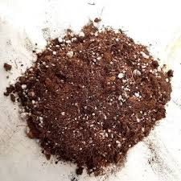
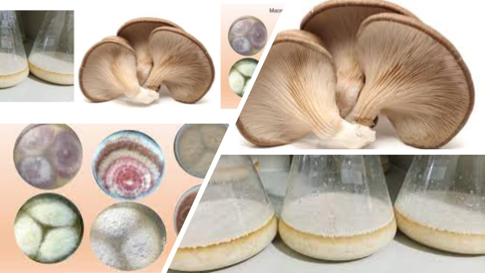
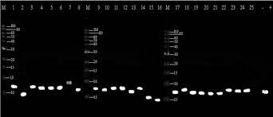
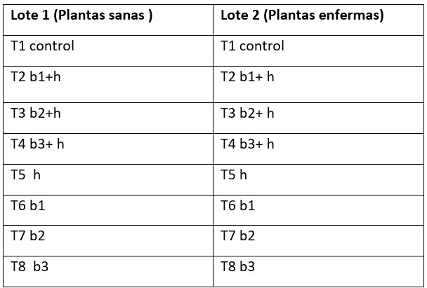
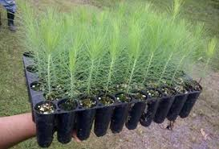

Tolerancia de Pinus patatula al Dampig off conferida por hor hongos ectomicorrizicos y bacterias auxiliadoras a la micorrización
Introducción
México posee el mayor número de especies de pinos (Greenpeace, 2009)(Kathleen 2008), los mismos tienen gran importancia desde el punto de vista económico, social y ecológico @parker2010. Pinus patula goza de una gran importancia económica ya que tiene una buena adaptabilidad a las diferentes condiciones climáticas y suelos; resalta entre uno de los más preferidos para programas de reforestación, es elegible para la comercialización por su bajo contenido de resina, fuste recto y libre de nudos (Velázquez et al., 2004, Lázaro, 2011). En México se reportan 4230 ha plantadas con Pinus patula. La producción de esta especie depende de ciertos factores como: la adecuada selección de los sustratos para la preparación de los medios de crecimiento, ya que una mezcla adecuada debe tener propiedades físicas y químicas que permitan la disponibilidad oportuna de los nutrimentos y el agua (Bures 1997, Mateo 2002, Boby y Valdivia 2005). Los viveros han recobrado un papel relevante como depositarios y proveedores de plantas, sobre todo ahora que se reconoce su importancia para la conservación de la biodiversidad (Benítez et al., 2002). Los mayores problemas de supervivencia que sufren las plantas forestales se presentan durante el período que se encuentra en el vivero. El principal causante de la ineficiente salud de las plántulas son las enfermedades fungosas, que dan lugar a infecciones del complejo «Damping-off», que ocasiona bajos niveles de viabilidad de las semillas y el colapso del crecimiento en las plántulas (C. Soldevilla, 1995). En la actualidad se utilizan diversas estrategias para combatir los patógenos, como son: el uso de terapias de calor, aislamientos de cultivos, los fungicidas y el control de riesgos; sin embargo, la gran mayoría de estas medidas inciden negativamente en el medio ambiente y esto trae consigo un desequilibrio del mismo (Achicanoy, 2001).
Materiales y metodos
Sitio de estudio
El experimento se realizará en el Vivero Forestal de la Universidad Veracruzana, Xalapa, México.
Sustrato
Utilizaremos una mezcla de arena-vermiculita-suelo forestal en proporción 2:2:1, el cual será esterilizado con vapor de agua durante 4 horas a una temperatura de 125°C, se dejará reposar por dos días y posteriormente se volverá a esterilizar en las mismas condiciones dos veces más.

Procesamiento de las semillas y siembra
Se utilizarán semillas certificadas de Pinus patula. Quinientas semillas se desinfectarán con Tween 80 durante 20 minutos, posterior se lavarán con agua estéril tres veces y se enjugan con alcohol etílico al 70% durante 10 minutos. Para finalizar se dejar remojar 30 segundos con Peróxido de Hidrogeno al 30% durante 5 minutos. Se pondrán a germinar en un semillero con sustrato estéril. A los 7 días se realizará el conteo de semillas enfermas en ambos lotes y el % de germinación. A los 15 días se realizará una segunda evaluación de número de plantas enfermas y los 30 días se trasplantarán las plantas restantes a tubetes de 350 ml de capacidad.
Obtención e inoculación
Durante el trasplante se realizará la inoculación con hongos ectomicorrízicos (Russula alutacea, Suillus decipiens).
La inoculación de bacterias auxiliadoras a la micorrización.
A los 30 días se inocularán con Fusarium oxysporum solamente la mitad de las plantas.
La preparación de los hongos la realizaremos cortando los estípites de los esporomas de los hongos y los píleos frescos, serán molidos en un molino eléctrico con agua destilada estéril, en una proporción 1:1(m:v) píleo y agua destilada. Usando 5 ml de una suspensión de esporas de 107 de cada hongo por planta, se hará para la mitad de las plantas durante el trasplante (10 días después las bacterias), adicionalmente mantendremos tubetes sin inocular que correspondieron al tratamiento testigo (Martínez et al., 2012)
En una concentración de 108 UFC·ml-1 (cepas de BAM aisladas de carpóforos de hongos ectomicorrízicos proporcionadas por el Laboratorio de Genética de la Facultad de Ciencias Agropecuarias) a los 10 días después de la siembra. Las cepas de BAM serán cultivadas individualmente en caldo nutritivo y se mantendrán en movimiento constante a 28 °C hasta alcanzar una concentración de 108 UFC·ml-1. El cultivo bacteriano se centrifugará en una centrífuga (Sigma, Modelo 2-16KL, Osterode am Harz, Alemania) a 7000 rpm y descartando el sobrenadante. El precipitado se lavará con agua destilada estéril para eliminar los restos del medio de cultivo y se suspenderá en agua destilada estéril hasta la misma concentración de 108 UFC·ml-1. Diez días después de la inoculación de los hongos ectomicorrízicos, se efectuará una sola aplicación de 3 ml de la suspensión bacteriana a cada tubete inoculado con hongos en las primeras horas del día (Barragán et al., 2022).
Consistirá en la aplicación de 20 ml de inóculo líquido a una profundidad de 5 cm por cada tubete. La otra mitad de las plantas será inoculada con Fusarium durante el trasplante y a los 30 días se inocularán con los microorganismos benéficos de la misma manera que el primer lote de plantas. Así tendremos un lote de semillas en condiciones estériles inoculadas con los organismos benéficos antes de la infección por Damping off y otro lote inoculadas después de la infección.

Identificación morfológica y molecular del fitopatógeno, hongos ectomicorrízicos nativos y bacterias auxiliadoras a la micorrización asociados a plántulas de Pinus Patula.
Utilizaremos la metodologia propuesta por Adame y García en el 2011. 
Esquema del experimento

Objetivo 1 Evaluación de variables morfométricas
